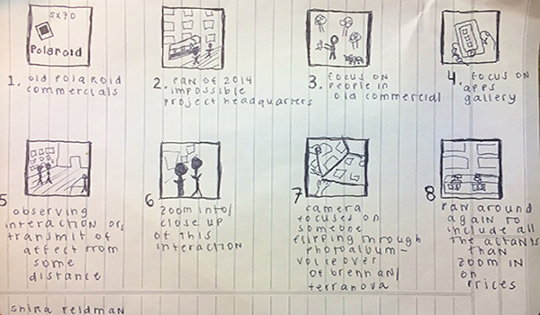

video proposal
Teresa Brennan opens her book “The Transmission of Affect” with the question, “Is there anyone who has not, at least once, walked into a room and ‘felt the atmosphere’? (1). To capture this feeling of the atmosphere is the ultimate goal of this video project.
The Impossible Project capitalizes on transmitting the affect of nostalgia. Yet to capture, to create, to diffuse an affect—an intensity— requires an agential assemblage of fragmented components working together in “biunivocal relationships”, to use Deleuzian terms. The Impossible Project headquarters functions rhizomatically, giving agency to its architectural, aesthetic, and digital elements.
In his “A Thousand Plateaus”, Deleuze writes of rhizomes as “collective assemblages of enunciation function[ing] directly within machinic assemblages” (7). The Impossible Project is a collection of assemblages for expressing nostalgia—through its music, posters, wall art, etc.—functioning within its capitalist, producing, machinic assemblages. The videos are attempts to capture the “collective assemblages of enunciation”. Through slow moving shots, I attempt to give a panorama of the space, displaying the polaroid cameras, film, and other accessories on display as well as the gallery wall of “portroids”. Additionally, there’s footage which simply observes customers within the space, interacting with the affective assemblages.
There is nothing inherently special or affective about the space and furniture, yet through the background soundtrack, the layout, the “organized mess”, for example the open Trader Joe’s bottles of wine, however, “the ‘atmosphere’ of the environment literally gets into the individual . . . physically and biologically, something is present that was not there before” (Brennan 1).
In his first chapter, Delueze uses a book for an example of an assemblage. He writes, "a strange mystification: a book all the more total for being fragmented" (6). I want my videos to capture each of these fragments on their own and working together, displaying the affective potential when all the assemblages work together.
storyboard
production plan
The beginning of the video will consist of both found footage from the old polaroid commercials and original footage of The Impossible Project Headquarters. The two videos will switch back and forth rapidly, juxtaposing the two. The footage will focus on the interactions in each video, the interactions with both the technology and the other people involved. To finish this sequence, there will be the clip of the man in the commerical holding his polaroid and a clip of someone using the Impossible Project application and scrolling through their digital gallery.
Next, there will be observational video. This footage will seek to capture the transmission of affect, filming both from afar and zooming in on the faces of people walking around the space and becoming one with the environment of photos around them.
To specifically articulate this transmission of affect, I will record two people going through a photobook together, with a voiceover of quotes from Terranova and Brennan, discussing much of what I discussed in my theorymaking: what the transmission of affect is, how it is related to nostalgia, and how it is related to immaterial labor and cultural content.
Finally, the footage will end with a final panora of all the actants in the appendage that is their business, culminating in the prices of the films and cameras. This should leave the viewer wondering how it is possible to capitlize off the transmisson of affect.
rough edits